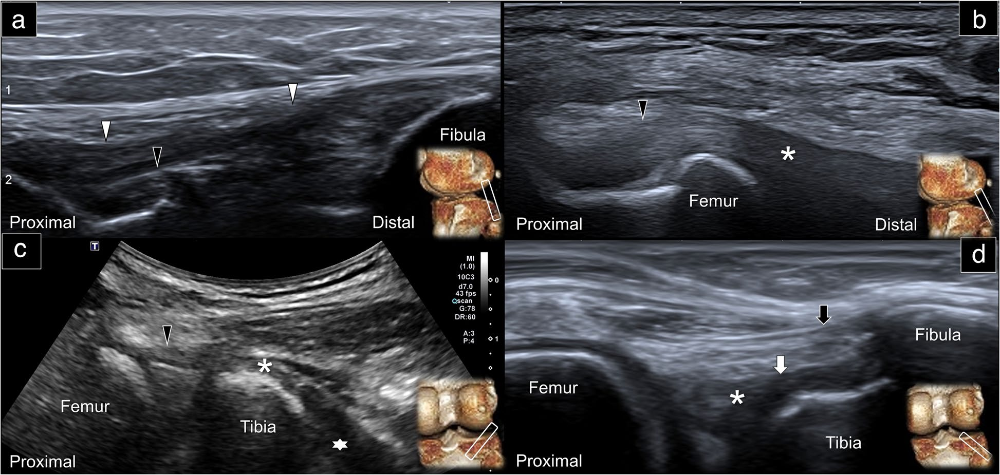

Respuesta clínica corta
¿Cómo no perderse en la esquina posterolateral de la rodilla?
Siguiendo en ejes largo y corto referencias continuas: cóndilo lateral, cabeza del peroné, bíceps femoral, poplíteo y ligamentos profundos.
Dato clave18 MHz lineal · 9,7 MHz curvilíneo · Doppler para vasos
El artículo organiza un barrido sistemático de ligamento colateral lateral, poplíteo, ligamentos popliteofibular y arcuato y tendón del bíceps femoral; es un atlas anatómico útil, no una validación de precisión diagnóstica ni de seguridad intervencionista.
Observado
Qué encontró y cómo interpretarlo
El protocolo normal se apoya principalmente en imágenes de una sola persona sana; los casos patológicos proceden de un archivo y no se seleccionaron como cohorte diagnóstica.
La revisión ofrece una anatomía por capas especialmente útil para estructuras profundas que los protocolos básicos pueden omitir.
Cita un estudio quirúrgico previo de solo 16 pacientes con rendimientos muy variables por estructura; esos datos no validan el atlas actual.
La afirmación de que la ecografía mejora diagnóstico o reduce lesiones durante inyección es plausible, pero no fue evaluada en este trabajo.
Atlas del artículo
Imágenes para entender el procedimiento
Estas figuras proceden del artículo original y se reproducen con licencia abierta verificada. Se muestran por su utilidad anatómica o técnica, no como prueba aislada de diagnóstico o eficacia.

Cuatro ventanas enlazan el colateral lateral con tendón, unión miotendinosa y músculo poplíteo y con los ligamentos profundos.
Cómo leerlaLas imágenes proceden de anatomía normal seleccionada y no validan por sí solas la identificación de roturas o el origen del dolor.
Wu WT et al., figura 5 del artículo original · Fuente · Licencia CC BY.
Procedimiento del artículo
Barrido sistemático de la esquina posterolateral
La exploración alterna ejes corto y largo para construir relaciones entre estructuras superficiales y profundas. La cabeza del peroné, el cóndilo femoral lateral, el tendón del bíceps femoral y la unión miotendinosa del poplíteo funcionan como nodos de orientación.
- Posición
- Decúbito lateral con la rodilla estudiada sobre la contralateral
- Transductores
- Lineal de 18 MHz y curvilíneo de 9,7 MHz cuando aumenta la profundidad
- Planos
- Eje corto para relaciones y eje largo para patrón fibrilar
- Seguridad
- Doppler para localizar vasos y reconocer hiperemia peri o intraneural
- 01
Orientarse en el plano axial
Se coloca el transductor sobre el cóndilo femoral lateral y se desplaza de anterior a posterior para identificar banda iliotibial y tendón del bíceps femoral.
- Referencias
- Cóndilo lateral, banda iliotibial, bíceps femoral y complejo anterolateral.
- Lectura
- El eje corto establece qué estructura es superficial y cuál queda profunda antes de rotar.
- 02
Seguir el colateral lateral
Desde el cóndilo se avanza distalmente hasta la cabeza del peroné y se pivota en plano coronal oblicuo para obtener el eje largo.
- Referencias
- Origen femoral, menisco lateral, cabeza del peroné, poplíteo y bíceps femoral.
- Lectura
- El tendón poplíteo cruza profundo al ligamento y ayuda a confirmar la orientación.
- 03
Encontrar poplíteo y popliteofibular
Se fija el extremo proximal en el surco poplíteo y se rota el distal hacia posterior; después se sigue la unión miotendinosa hasta la banda que alcanza la cabeza del peroné.
- Referencias
- Tendón, unión miotendinosa y músculo poplíteo; ligamento popliteofibular.
- Lectura
- El popliteofibular emerge junto a la unión miotendinosa y discurre hacia el peroné.
- 04
Separar arcuato de popliteofibular
En eje corto sobre la línea articular posterolateral se avanza hacia la cabeza del peroné observando dos estructuras profundas bajo el bíceps femoral.
- Referencias
- Bíceps femoral, tejido adiposo, ligamento arcuato superficial y popliteofibular profundo.
- Lectura
- La relación por capas es más fiable que intentar reconocer cada banda aislada en una imagen estática.
Secuencia resumida a partir del protocolo normal y del atlas anatómico del texto completo. Su finalidad es ordenar la exploración; no acredita competencia para procedimientos invasivos.
Aplicabilidad
Qué significa clínicamente
Utilizar cabeza del peroné, cóndilo lateral y bíceps femoral como referencias reduce la búsqueda aleatoria.
Alternar ejes corto y largo permite confirmar continuidad y relaciones, no solo ecogenicidad.
Doppler debe formar parte del reconocimiento de estructuras vasculares antes de interpretar o intervenir.
La imagen debe integrarse con mecanismo, exploración ligamentosa, síntomas y, cuando proceda, resonancia.
Límite
Qué no permite afirmar
Una persona sana para el atlas normal y selección retrospectiva de ejemplos patológicos.
Sin evaluación propia de fiabilidad, precisión diagnóstica o curva de aprendizaje.
No compara el recorrido con un protocolo estándar ni con resonancia de forma prospectiva.
No estudia seguridad, eficacia de inyecciones ni resultados del paciente.
Contexto
¿Se parece a tu paciente?
- Población estudiada
- Las imágenes normales principales se obtuvieron en un hombre sano de 38 años y los ejemplos patológicos procedían retrospectivamente de un registro de imágenes; no existe una cohorte diagnóstica propia.
- Diseño
- Revisión pictórica crítica con protocolo sonoanatómico
- Resultado evaluado
- Descripción de un protocolo ecográfico para estructuras de la esquina posterolateral de la rodilla
Fuente primaria
Lee el estudio, no solo nuestro análisis
Wu WT, Onishi K, Mezian K, et al. Ultrasound imaging of the posterior lateral corner of the knee: a pictorial review of anatomy and pathologies. Insights Imaging. 2024;15(1):39. doi: 10.1186/s13244-024-01606-x
Responsabilidad editorial
Francisco José Extremera García
Fisioterapeuta colegiado ICPFA 4288 · Osteópata D.O.
Creador y responsable editorial de FisioLógico
- Última revisión
- Conflictos de interés
- Ninguno declarado.